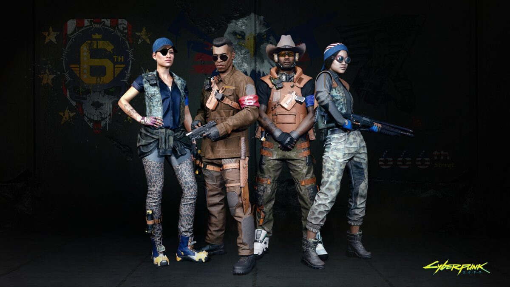

|
| |||||||||
| Anasayfa | Hayvanlar | Kaplan Pençeleri | Valentinolar | Voodoo Oğlanları | Maelstrom | Mox | 6. Cadde | Wraithler | Aldecaldolar |
| 6th Street, Night City'de bir çetedir. Amblemlerinden biri mavi yıldızlardan oluşan mavi bir "6. Cadde" ve ortasında siyah yıldızların bulunduğu "6. Cadde" yazan siyah bir kafatasıdır. NCPD'nin işe yaramazlığından bıkan 4. Kurumsal Savaş gazileri tarafından kurulan, 2045 yılında 6. Cadde'nin üyeleri genellikle sahada geçirdikleri günlerden itibaren ağır bir şekilde silahlanmışlardır. Son zamanlarda, faturalarını ödemek için gasp ve kaçakçılığa girmek zorunda kaldılar. Şehrin her yerinde faaliyet gösterirken, 6. Cadde'nin hepsi Küçük Avrupa'daki Kutsal Melekler Kilisesi'nin hoş karşılanan koruyucularıdır. 6. Cadde, Vista del Rey topluluğuna hizmet etmek ve onu korumak konusunda bir vazife belirled kendisine. Bugün onların kanunu yorumlamaları ve "şehre adalet getirmeleri" tartışılabilir durumda ve kendilerine hizmet ediyor denilebilir. 6th Street çetesi, geçici bir polis gücü olarak hareket etmek için bir araya gelen eski moda Amerikalı yurtseverler tarafından kuruldu. Halka hizmet etme olan görevlerini unuttular. Konumlarını ve halkı kendi çıkarlarına kullanmaları ile artık diğer çetelerden pek de farkları kalmadı. Düzenli olarak küçük mahalle işletmelerini haraç ve "koruma parası" ödemeye zorlarlar ve çeşitli ve düpedüz suç faaliyetlerinde bulundukları bilinmektedir. 6. Cadde gangerlerinin üniformaları, askeri ve vatansever aksanlardan büyük ölçüde etkilenir: askeri botlar, taktik yelekler ve dizlikler, kargo pantolonları, eski ABD bayraklı beyzbol şapkaları, yıldızlar, çizgiler ve kartallar. Çete tarafından kullanılan siber yazılımlar arasında siberoptikler, ağrı düzenleyicileri ve sağlık monitörleri bulunur. Çete yaklaşık 2.300 üyeden oluşuyor. 6. Cadde, yaklaşık elli yıl önce, yerel çetelerden ve NCPD'nin işe yaramazlığından bıkmış ve meseleyi kendi ellerine almaya karar veren Dördüncü Şirket Savaşı gazileri tarafından kuruldu. Biraz ekipman topladılar, eğitimlerini tazelendiler ve sonra sokaklara çıktılar. Çete, haydutları ve serserileri uzak tutmak için kuruldu ve karizmatik liderler insanlara kendilerini koruma ve diğer çetelerin yol açtığı zarar için intikam alma imkanı verdi. 6. Cadde üyeleri genel olarak çatışmaların gazileri, emekli askerler ve başka iş bulamayan işten çıkarılmış kurumsal güvenlik görevlilerinden oluşmaktadır. Çetenin geri kalanı, katıldıktan sonra askeri eğitim almış sivillerden oluşuyor. Ana motivasyonları "şehre adalet getirmek", ancak hukuka ilişkin yorumları sorgulanabilir ve hizmet ettikleri tek grup kendileridir. Çetenin ana karargahı Arroyo'da ancak kontrolleri altındaki diğer ilçelerin mahallelerinde devriye gezmekten ve çetenin tesislerini izlemekten sorumlu kendi yerel karargahları var. 6. Cadde'nin operasyonları arasında soygun, gasp ve silah kaçakçılığı bulunmaktadır. Grubun Night City dışındaki Göçebe gruplarıyla geniş bağlantıları da vardır. Ekip ayrıca arabaları çalar ve modifiye eder. 6. Cadde yetenekli teknisyenlere sahip ve şehir genelinde birçok garaj ve atölye işletiyor. Kiralık bir savaş taksisi olarak hizmet veriyorlar, bu da onları özellikle paralı askerler arasında popüler kılıyor. Suç niteliğindeki yapılarına rağmen, 6th Street gangerleri yerleşik çevrelerinin dışında sorun çıkarmadıkça, çoğunlukla şirketler ve polis güçleri tarafından tolere edilir. Askeriye odaklı şirketlerin yüksek kaliteli ürünler için müşterileri durumundalar ve NCPD'nin işi, çetenin mahallelerinde uyguladığı kendi adalet anlayışları ile daha kolay hale getirildi.  |